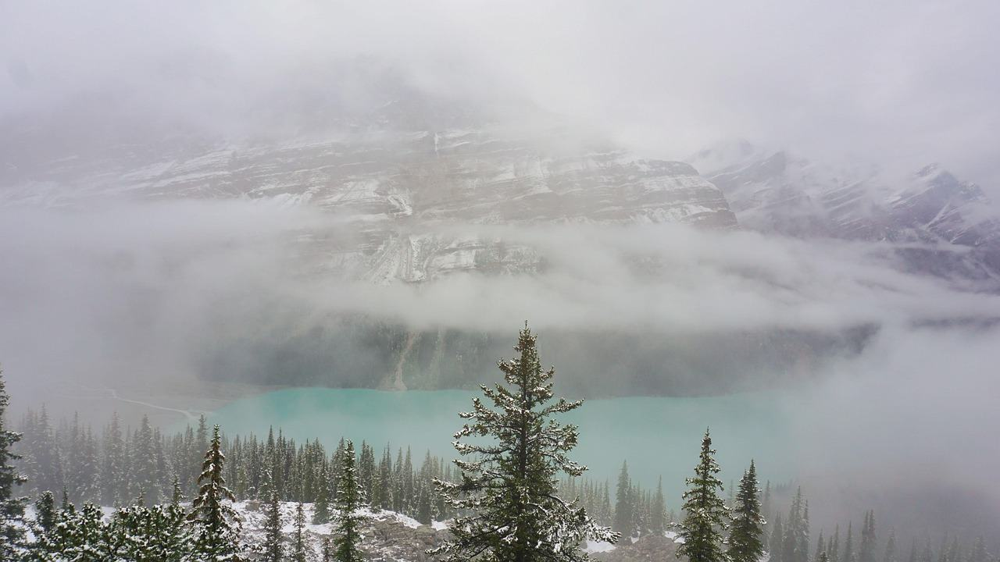
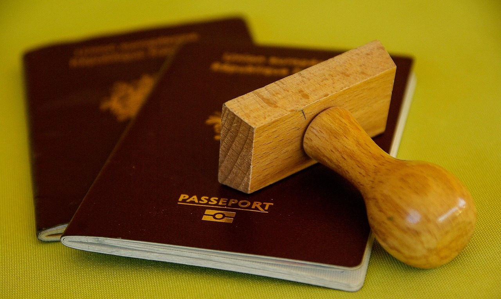

Подготовка к поездке
Виза, перелёт, деньги и одежда. Дольше всего ждать визу, поэтому начинаем с неё.
Визовый календарь
Когда подавать документы под ваши даты
Выберите месяц поездки: календарь посчитает сроки с запасом на дополнительную проверку анкеты.
Успеваете. Даты посчитаны с запасом на дополнительную проверку анкеты.
до 1 февраля 2027
Анкету IMM 5257 подают онлайн. Выписки за четыре месяца, справка с работы, программа и договор тура. Анкету проверяем построчно перед отправкой.
до 3 марта 2027
Биометрия. Визовый центр в Москве или Петербурге, если есть запись. Сданные отпечатки действуют 10 лет.
до 2 мая 2027
Паспорт отправляют на вклейку. Стамбул, Ереван или Алматы: курьером или лично, удобно совместить с отпуском.
до 10 июня 2027
Билеты. Когда паспорт с визой вернулся. Раньше покупаем только возвратные тарифы.
Сборы, которые платят Канаде
- 100 CAD
- Визовый сбор за человека, платится онлайн при подаче анкеты.
- 85 CAD
- Столько берут за отпечатки и фото. Если сдавали их за последние 10 лет, повторно платить не нужно.
- около 25 CAD
- Столько берёт визовый центр за свой сервис. Точная сумма зависит от центра и курса.
Порядок и сборы сверены 14 сентября 2026 года. Правила меняются, поэтому перед подачей мы проверяем их на сайте иммиграционной службы Канады.
Сутки в пути с пересадкой
Прямых рейсов из России нет. Удобнее всего лететь через Стамбул.
- Москва
- Стамбулпересадка
- Торонто, Монреаль или Ванкувер
В пути от 25,5 часа. Билет в одну сторону — от 47 949 ₽ в низкий сезон, по данным Авиасейлс на сентябрь 2026 года.
По Канаде летим внутренними рейсами из Торонто в Калгари, Ванкувер или Уайтхорс, а билеты покупаем вместе с вами под даты группы.
Возвратные билеты берём сразу после записи, а невозвратные — когда паспорт с визой уже на руках.
Российские карты в Канаде не работают
Наличные
Возьмите канадские или американские доллары. Меняйте заранее: курс в аэропорту хуже.
Карта банка СНГ
Карты банков Казахстана и Киргизии работают в Канаде, в том числе через Apple Pay, и оформить их можно удалённо.
Тур — в рублях
Тур оплачиваете нам по договору: 30 % при записи, остальное за месяц до поездки.
Одежда по сезонам
Зима: Юкон и Черчилл
Комбинезон, унты и варежки выдаём. Своё: термобельё, флис, шапка и запасной аккумулятор, на морозе телефон садится за час.
Лето: горы и океан
Трекинговые ботинки, мембранная куртка, флис на вечер и солнцезащитный крем. В Тофино часто идёт дождь.
Осень: Восток
Одевайтесь слоями: футболка, свитер и лёгкая пуховка. Удобная обувь для брусчатки Квебека и влажных троп Алгонкина.
Что спрашивают про визу и документы
Нужна ли страховка?
Для визы не обязательна, но без неё не везём: эвакуация из национального парка стоит дороже всей поездки.
Можно подать на визу самим?
Да. Мы даём список документов и проверяем анкету, но подаёте вы: визу получает человек, а не туроператор.
Что будет, если откажут?
Вернём оплату за тур, кроме уже оплаченных невозвратных броней. Условия записаны в договоре.
Какой нужен загранпаспорт?
Действующий не меньше шести месяцев после возвращения, с двумя чистыми страницами.

Проверим ваши документы до подачи
Пришлите месяц поездки и маршрут: составим список документов и сроки под ваши даты.